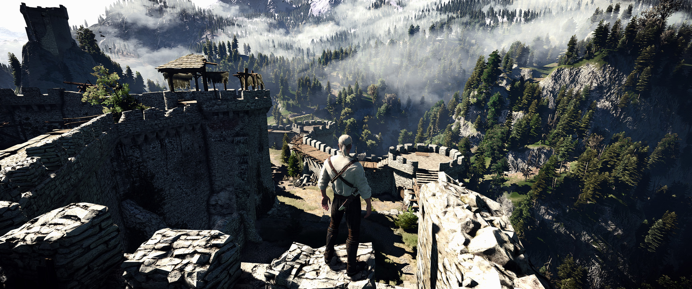
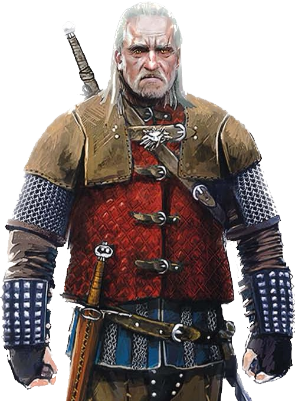
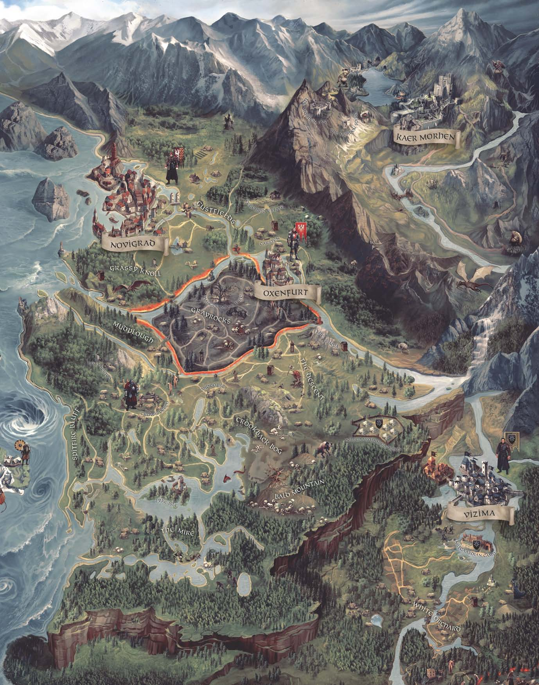
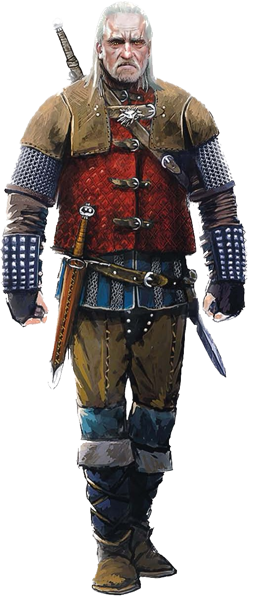
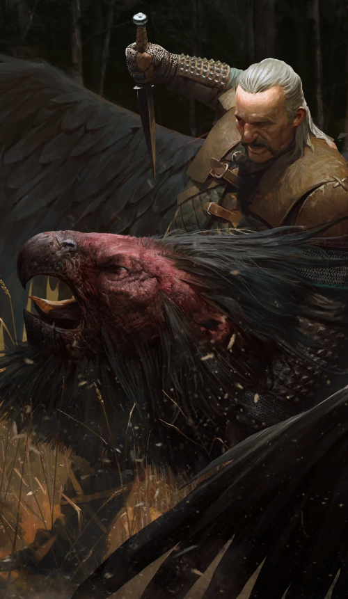
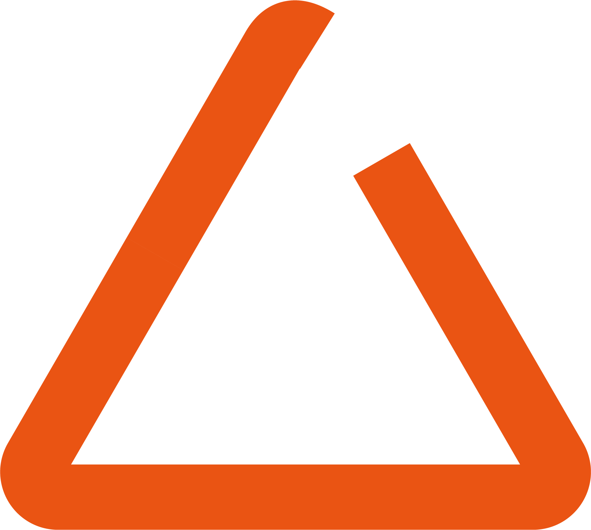
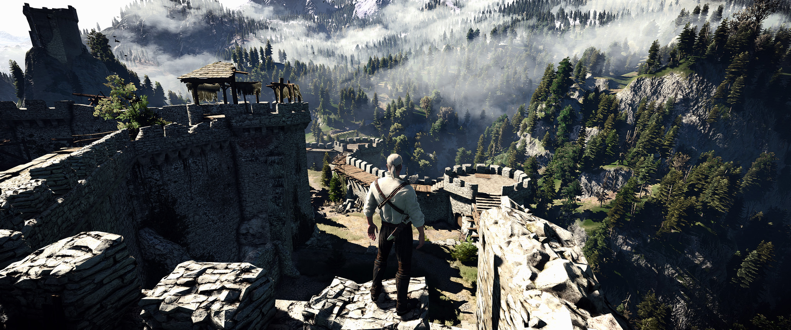
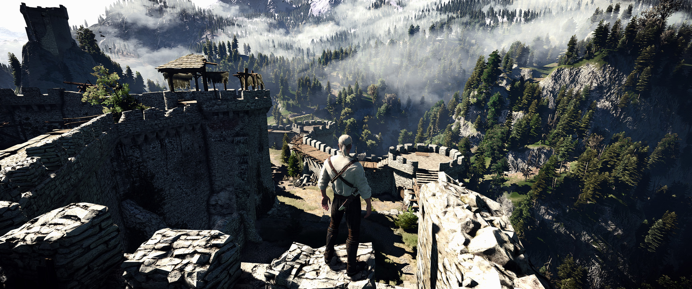

Kaer Morhen (corruption of Elder Speech: Caer a'Muirehen,
meaning Keep of the Elder Sea) is an old keep
where witchers of the School of the Wolf used to be trained.
It is located in the Blue Mountains of Hertch in the kingdom of Kaedwen,
right off the Gwenllech river. The castle can only be reached by "The Witchers Trail",
nicknamed "The Killer", which is easy to miss and encircles the keep.
While Trials and Changes are no longer performed here, witchers still tend to rest here
between their assignments—usually during the winter,
after which they set out on The Path again.
- ATLAS -



" From there they could see the ruins of Kaer Morhen huddled against the stone precipices - the partially demolished trapezium of the defensive wall, the remains of the barbican and gate, the thick, blunt column of the donjon.
donjon. "
- pg. 51, Blood of Elves (UK edition)
REGION


Vesemir
Vesemir
School of the Wolf
Vesemir was the oldest and most experienced witcher at Kaer Morhen
in the 13th century and acted as a father figure to Geralt and the other witchers.
Like many of the other witchers,
he spent each winter in the fortress and set out on the path when spring arrived.
He was one of the few members of the School of the Wolf to survive the assault on Kaer Morhen.
By the 1260s, he was the sole old witcher remaining;
however, as he was only a fencing instructor,
he didn't possess the knowledge necessary to create
new mutagens in order to mutate more disciples into witchers.
Quen
a protective shield that lasts for 30 seconds at the sign's basic level. It is a sign that Geralt uses on himself – quen absorbs all damage directed at Geralt, and the upgraded version reflects 50% of the damage back toward to enemy. While quen is in effect, Geralt cannot regenerate vigor.
Yrden
a magical trap placed on the ground, which will wound and immobilize opponents. The sign's basic level allows you to place a single yrden sign on the ground. After upgrading it, you'll be able to place up to three yrden signs at a time. These will work in unison, creating an impassible barrier.
Aard
a telekinetic wave that can throw back, knock down or stun an opponent. This sign can also be used to destroy obstacles, for example crumbling walls or stacks of barrels.

Igni
a gush of flames that wounds opponents. When upgraded, the sign has a chance of incinerating opponents and has a larger area of effect. It can also be used to detonate flammable gases emitted by some bombs.
Axii
a charm placed on an opponent. If the charm attempt is successful, the enemy will become your ally for a short while, fighting at your side.

 
